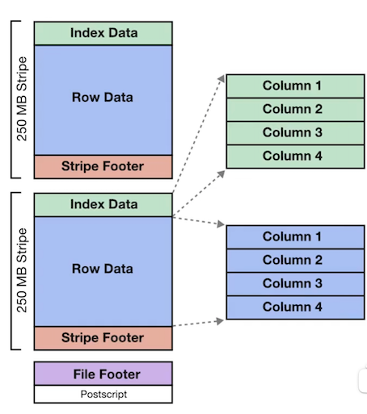

DP900 Learn (Cont.)
- SaaS software as a Service For Customers
A product that is run and managed by the service provider Don't worry about how the service is maintained. It just works and remains available.
- PaaS Platform as a Servic
Focus on the deployment and management of your apps.
Don't worry about, provisioning, configuring or understanding the hardware or OS.
- IaaS Infrastructure as a Service. For Admin
The basic building blocks for cloud IT. Provides access to networking features, computers and data storage space.
Don't worry about IT staff, data centers and hardware.

Azure Data Roles
Database Administrator: configures and maintains a databases g. Azure Data services or SQL server.
-
Responsibilities
- Database management
- Manage security, granting user access
- Backups
- Monitors Performance
-
Common Tools
- Azure Data Studio
- SQL Server Management Studio
- Azure Portal
- Azure CLI
-
Data Engineer: Design and implement data tasks related to the transfer and storage of big data
-
Responsibilities
- Database pipelines and process
- Data ingestion storage
- Prepare data for analytics.
- Prepare data for analytical processing
-
Common Tools
- Azure Synapse Studio
- SQL
- Azure ClI
-
Data Analvst: Analvzes business data to reveal important information
- Provides insights into the data
- Visual reporting
- Modeling data for analysis
- Combines data for visualization and analvsis
-
Common Tools
- Power BI Desktop
- Power BI Portal
- Power BI services
- Power BI report bulder
Database Administrator - Common Tools
Azure Data Studio

Connect to Azure SQL, Azure SQL data warehouse, Postgres SQL and SQL Server (big data clusters, on-premise)
- Various libraries and extensions along with automation tools.
- Graphical interface for managing on-premises and cloud-based data services.
- runs on Windows, macOS, Linux
- Possibly a replacement for SMS (still lacks some features of SSMS)
SQL Server Management Studio (SSMS)

- Automation tooling for running SQL commands or common database operations
- Graphical interface for managing on-premises and cloud-based data services.
- Runs on Windows
- More mature than Azure Data Studio
Azure Portal and CLI
- Manage SQL database configurations. eg create, deleting, resizing, number of cores
- Manage and provision other Azure Data Services
- Automate the creating, updating or modifying resources via Azure Resource Manager templates (IaC)
Data Engineering - Common Tools
Azure Synapse Studio

azure portal integrated to manage azure synapse, data ingestion (Azure data factory), management of azure synapse assets (SQL Pools/Spark Pool)
Knowledge SQL
Create create databases., tables, views, etc
Azure CLI
Support operations SQL cd to connect to Microsoft server Azure SQL data and run a talk queries and commands
HDInsights
Streaming data via Apache Kafka or Apache Spark Applying ELT jobs via HIVE, PIG, Apache Spark
Azure Databricks
Using Apache Spark to create ELT or streaming jobs to dataware houses or data lakes
Data Analyst Common Tools
Power BI Desktop
- A stand alone application for data visualization
- You can do data modelling
- Connect to many data sources
- Create interactive reports
Power BI Portal/Power BI Service
- A web ui for creating interactive dashboards
Power BI Report builder
- Create paginated reports (printable reports)
Data Overview
- Batch and Streaming Data
How do we move our data around?
- Relational and Non Relational
How do access, querv and search our data?
- Data Modelling
How do we prepare and design our data?
- Schemas and Schemaless
How do we structure our data for search?
- Data Integrity and Data Corruption
How do we trust our data?
- Normalized and Denormlized
How do we trade qualitv vs speed?
Introduction to Data
- What is data?
Data is units of information that could be in the form of numbers, text or machine code, images, videos, audio or physical (handwriting)
Data Documents
What are data documents?
A data document defines the collective form in which data exists
Common types of data documents:
- Datasets - a logical grouping of data
- Databases - structured data that can be quickly access and searched
- Datastores - unstructured or semi-structured data to housing data
- Data warehouses - structured or semi-structured data for creating reports and analytics
- Notebooks - data that is arranged in pages, designed for easy consumption

Data Sets
What is a dataset?
A data set is a logical grouping of units of data that generally are closely related and/or share the same data structure.
There are publicly available data sets that are used in the
learning of statistics, data analytics, machine learning
- MIST database
Images of handwritten digits used to test classification, clustering, and image processing algorithm.
Commonly used when learning how to build computer vision ML models to translate handwriting into digital text
-
Common Objects In Context (COCO) dataset
- Object segmentation
- Recognition in context
- Superpixel stuff segmentation
- 329K images (>200K labeled)
- 0.5 million object instances
A dataset which contains many common images using a JSON file (coco format) that indentify objects or segments within an image.
Could be useful for determine customer sentiment analysis.
Data Types
What is a data type?
A data type is a single unit of data that tells a compiler or interpreter (computer program) how data is intended to be used.
Numeric Data Types: A data type involving mathematical numbers
- Integer - a whole number, (could be negative or positive) -100, 7, 11, 21903813091
- Float - a number that has a decimal e.g. 1.5, 0.0, -10.24, 9.432363535345
my_ int = 1
my_float = 2.2
Text Data Types: A data type that contains readable and non readable letters
- Character - a single letter, alphanumeric (AZ), digit (0-9), blank space, punction, special characters (
$%&* @) - String - a sequence of characters g. Words, sentences and paragraphs
my_char = 'a'
my_string = "We prefer to help ourselves"
-
Composite: A data type that contains cells of data that can be accessed via an index or a key
-
Array - a group of elements that contain the same data type, can be accessed via their index (position)
- Hash (Dictionary) - a group of elements where a key can be used retrieve a value
Composites can be both data-types and data structures
my_arr = ['live', 'long', 'and', 'prosper' ]
my_dict = {"Speed": 1, "Accuracy": 2 }
Binary Data Type - represented by a bit or a series of bits (a byte), Which is either O (off) or 1 (on)
one_byte = int('11110000')
Boolean Data Type - A datatype that is either True or False
Some languages represents a Boolean as
- a bit as a Boolean eg. O (false ) or 1 (true)
- the first letter eg. t (true) or f (false)
my bool = True
Enumeration (Enum Data Type) - a group of constant
(unchangeable) variables eg. DIAMOND, SPADE, HEART, CLUBS
Can be a data type and/or a data structure, varies on the language
class Shake (Enum):
VANILLA = 7
CHOCOLATE = 4
COOKIES = 9
MINT = 3
Shake.VANILLA
Shake.CHOCOLATE
Shake.COOKIES
Shake.MINT
Schema
What is a schema?
A schema (in terms of databases) is a formal language which describes the structure of data (blueprint) of a database.
A schema can define many different data structures that serve different purposes for a database.
Different data structures (relational databases):
* Tables * Queues
* Fields * Triggers
* Relationships * types,
* Views * Sequences
* Indexes * materialized views
* Packages * Synonyms
* Procedures * database links
* Functions * Directories
* XML schemas
A Ruby on Rails schema that defines the structure for a relation database
Schemaless
What is a schemaless?
Schemaless is when the primary "cell" of database can accept many types.
This allow developers to forgo upfront data modelling
Common schemaless databases are:
- Key/Value
- Document
- Columns
- Wide Column
- Graph
Query and Querying
What is a query?
A query is a request for data results (reads) or to perform operations such as inserting, updating deleting data (writes).
A query can perform maintenance operations on the data and is not always restricted to just working with the data that resides within the database.
Batch vs Stream Processing
Batch Processing
- When you send batches (a collection) of data to be processed.
- Batches are generally scheduled: eg. Every day at 1PM
- Batches are not real-time
- Batches processing is ideal for very large processing workloads
- Batch processing is more cost-effective
Stream Processing
When vou process data as soon as it arrives:
- Produces will send data to a stream and
-
Consumers will pull from the stream
-
Stream processing is good for real-time analytics or real-time processing (streaming video)
-
Much more expensive than batch processing
Relational Data
- Tables
A logical grouping of rows and columns. Think like a Excel spreadsheet
Tabular data - data that makes use of table data structures
- Views
Views is a result set of a stored query on data stored in memory (a temporary or virtual table)
- Materialized Views
Material Views is a result set of stored query on data stored on disk
- Indexes
A copy of vour data sorted by one or multiple columns for faster reads at the cost of storage
- Constraints
rules applied to writes, that can ensure data integrity: eg. don't allow duplicate records
- Triggers
a function that is trigger on specific database events
- Primary Key
one or multiple columns that uniquely identify a table in a row eg. Id
- Forgien key
a column which holds the value of primary key from another key to establish a relationship
A relationship is when two tables have a reference to one another to join data together
Relationships
Relational databases establish relationships to other tables via foreign keys Referencing another table's primary key.
-
One-to-one
- A monkey has a banana
-
One-to-many
- A store has many customers
-
Many-to-many
- A project has many tasks and Tasks can belong to many projects
-
Many to Many (via Join/Junction Table)
- A student has many classes through enrollments
- A class has many students through enrollments
Row-store vs Column-store
Row-store
- Data is organized in rows
- Traditional relational databases are row-stores
- Good for general purpose databases
- Suited for Online transaction processing (OLTP)
- Great when needing all possible columns in a row is important
- Not the best at analytics or massive amounts of data
Column-store
- Data is organized into columns
- Faster at aggerating values for analytics
- NoSQL store or SQL-Like databases
- Great for vast amount of data
- Suited for Online analytical processing (OLTP)
- Great when you only need a few colums
Indexes
A database index is a data structure that improves the speed of reads from the database table by storing the same or partial redundant data organized in a more efficient logical order.
The logical ordering is commonly determined by one ore more columns: sort key(s)
A common data structure of an index is a Balanced Tree (B-Tree)
CREATE INDEX idx_address_phone
ON address (phone)

Normalized vs Denormalized Data
- Normalized
A schema design to store non-redundant and consistent data

* Data Integrity is maintained
* Little to no redundant data
* Many tables
* Optimizes for storage of data
- Denormalized
A schema that combines data so that accessing data (querying) is fast
* Data Integrity is not maintained
* Redundant data is common
* Fewer tables
* Excessive data, storage is less optimal
Pivot lable
A pivot table is a table of statistics that summarizes the data of a more extensive table from a: Database, Spreadsheet or Business intelligence (BI) tool
- Pivot tables are a technique in data processing
- They arrange and rearrange (or "pivot) statistics in
- order to draw attention to useful information
- This leads to finding figures and facts quickly making them integral to data analysis.
In Micorsoft Excel its very easy to create Pivot Tables. Think of a pivot table as an interactive report where you can quickly aggerate (group) your data based on various factors eg.
- By Year Month, Week or Day
- Sum, Average, Mix or Max

Strongly Consistent vs Eventually Consistent
What is data consistency?
When data being kept in two different place and whether the data exactly match or do not match
When you have to have duplicates of your data in many places and need to keep them up-to-date to be exact matching, based on how data is transmitted and service levels cloud service providers will use these two terms:
- Strongly Consistent
Every time you request data (query) you can expect consistent data to be returned with x time (1 seconds)
We will never return to you old data. But you will have to wait at least 2 seconds for the query to return
- Eventually Consistent
When you request data you may get back inconsistent data within 2 seconds.
We are giving you whatever data is currently in the database, you may get new data or old data, but if you wait a little bit longer it will generally be up to date.
Synchronous vs Asynchronous
Synchronous and Asynchronous can refer to mechanism for data transmission or data replication
- Synchronous
continuous stream of data that is synchronized by a timer or clock (guarantee of time)
Can only access data once transfer is complete
- Guaranteed consistency of data return at time of access
- Slower access times
A company has a primary database, but thev need to have a backup database in case their primary database fails. The company cannot lose any data, so everything must be in-sync.
The database is not going to be accessed while it is standing by to act as replacement.
- Asynchronous
continuous stream of data separated by start and stop bits (no guarantee of time)
Can access data anytime but may return older version or empty placeholder
Faster access times, not guarantee of consistency

A company has a primary database, but thev want a read-replica (coov of the database) so their data analvtics person can create computational intensive reports that do not impact the primarv database. It does not matter if the data is exactly 1-to-1 at time of access
Non Relational Data
-
Types of non-relational databases: Key/Value
- Each value has a kev
- Designed to scale
- Onlv simple lookups
-
Document
- Primary entity is a JSON-like data-structure called a document
-
Columnar
- Has a table-like structure but data is stored around columns instead of rows
-
Graph
- Data is represented with nodes and structures. Where relationships matter
Sometimes non-relational database can be both Key/Value and Document
eg. Azure Cosmo DB or Amazon DynamoDB
Data Sources
What is a data source?
A data source is where data originates from
An analytics tool may be connected to various data sources to create a visualization or report
A data source could be a:
- Data lake
- Data warehouse
- Datastore
- Database
- Data requested on demand from an API
- endpoint from a web-app
- Flat files (e.g. exel spreadsheet)
Extracting data from data sources
A data tool like Business Intelligence (BI) software would establish a connection to multiple data sources. A BI will extract data which could be could pull data at the time report, or could pull data on a schedule, or data could be streamed. The mechanism for extracting data will vary per data source
A Datastore a repository for persistently storing and managing collections of unstructured or semi-structured data
Data store is a very broad term, and interchangeable used with databases.
But generally a data store indicates working unstructured or semi-structured data
- Flat Files (documents, spreadsheets)
- Email (an email server)
-
Databases (complex data stores developed using formal design and modeling techniques)
- Relational Databases
- NoSQL Databases
- Object-Oriented Databases
-
Data stores designed to be distributed across many machines
- Directory services
What is a Database?
A database is a data-store that stores semi-structured and structured data
A database is more complex data stores because it requires using formal design and modeling techniques
Databases can be generally categorized as either:
Relational databases
- Structured data that strongly represents tabular data (tables, rows and columns)
- Row-oriented or Columnar-oriented
Non-relational databases
- Semi-structured that may or may not distantly resemble tabular data.
Databases have a rich set of functionality:
- specialized language to query (retrieve data)
- specialized modeling strategies to optimize retrieval for different use cases
- more fine tune control over the transformation of the data into useful data structures or reports
Normally a databases infers someone is using a relational row-oriented data store
What is Data Warehouse?

A relational datastore designed for analytic workloads, which is generally column-oriented data-store
Companies will have terabytes and millions of rows of data, and they need a fast way to be able to produce analytics reports
Data warehouses generally perform aggregation
- aggregation is grouping data eg. find a total or average
- Data warehouses are optimized around columns since they need to quickly aggerate column data
Data warehouses are generally designed be HOT
Hot means they can returned queries very very fast even though they have vast amounts of data
Data warehouses are infrequently accessed meaning they aren't intended for real-time reporting but maybe once or twice a a day or once a week to generate business and user reports.
A data warehouse needs to consume data from a relational databases on a regular basis.
A Data mart subset of a data warehouse
A data mart will store under 100 GB and has a single business focus
Data mart allows different teams or departments to have control over their own dataset for their specific use case
Data marts are generally designed be read-only.
Data marts also increase the frequency at which data can be accessed.
The cost to query the data is much lower and so queries can be performed multiple times a day or even hourly.
What is a Data Lake?
A data lake is a centralized storage repository that holds a vast amount of raw data (big data) in either a semi-structured or unstructured format.
A data lake lets you store all your data without careful design or having to answer questions on the future use of the data. (Hording for data scientist)
A data lake is commonly accessed for data workloads such as:
- Visualizations (Business Intelligence)
- Real-time analytics
- Machine Learning
- On-premise data
Data lakes are great for data-scientists but its very hard to use data lake for Bl reporting
If data lakes are not well-maintained they can become data-swamps (a mess of data)

What is a Data Lakehouse?
A Data Lakehouse combines the best elements of a data lake and a data warehouse
Data Lakehouses compared to a Data warehouse can:
- support video, audio and text files
- Support data science and ML workloads
- have support for both streaming and ELT
- Work with many open-source formats
- Data will generally reside in a data lake or blob stores
Data Lakehouses compared to a Data lakes can:
- perform BI tasks very well
- much easier to setup and maintain
- has management features to avoid a data lake becoming a data swamp
- more performant than a data lake
An example of a Data Lakehouse is Apache Delta Lake
Data Structures
What is a Data Structure?
Data that is organized in a specific storage format, that enable easy access and modification. A data structure can store various data types.
Data can be abstractly described to have a degree of structure:
- Unstructured - a bunch of lose data that has no organization or possibly relation
- Semi-Structured - data that can be browsed or searched (with limitations)
- Structured - data that can be easily browsed or searched
Data Structures - Unstructured
Unstructured data is just a bunch of loose data, think of a junk folder on your computer with a bunch of random files, not optimized for search or analysis, or simply no relation between various data.
Microsoft and Azure services that store unstructured data
Data Structures - Semi-Structured
Semi-structured data is (*no schema) data has some form of relationship, its easy to browse data to find related data, you can search data but there are
limitations or when you search vou will pay at a
computative or operational cost
Concrete semi-structure data structures:
XML. JSON. AVRO. PARQUET
Azure and other services that store semi-structured data
Semi Structured Data structure
Semi-structured data is data that contains fields.
The fields don't have to be the same in every entity.
You only define the fields that you need on a per-entity basis.
Common semi-structured data structures:
JavaScript Obiect Notation (JSON)
Format used in JavaScript notation: Store data in memorv, read and write from files.
Apache Optimized Row Columnar format (ORC)
organizes data into columns rather than rows (columnar store data structure).
Apache Parquet
Another columnar data structure. A Parquet file contains row groups.
Apache AVRO
row-based format. Fach record contains a header that describes the structure of the data in the record
Semi Structured - JSON
JSON (JavaScript Object Notation) is a lightweight data-interchange format
JSON is built on two structures
- A collection of name/value pairs
In other languages: realized as an object, record, struct, dictionary, hash table, keyed list, or associative array
- An ordered list of values
In other languages: realized as an array, vector, list, or sequence
Semi Structured - ORC
Apache ORC (Optimized Row Columnar) a storage format of the Apache Hadoop ecosystem
- It is similar to RCFile and Parquet files and is the successor to RCFiles
- It was developed by Facebook to supports columnar reads, predictive
- pushdown and lazy reads
- It is more storage efficient than RCFiles (taking up 75% less space)
- ORC only supports Hadoop's HIVE and PIG
- ORC performs better with HIVE than Parquet files
- ORC files are organized into stripes of data
The Anatomy of an ORC file
-
File footer stores auxiliary information
- list of stripes in the file
- number of rows per stripe
- each column's data type.
- column-level aggregates count, min, max, and sum
-
stripe footer contains a directory of stream locations
- Row data is used in table scans
- Index data includes min and max values for each column and the row
- positions within each column
- The default stripe size is 250 MB
- Large stripe sizes enable large, efficient reads from HDFS

Semi Structured - Parquet
Apache Parquet is a columnar storage file format available to any project in the Hadoop ecosystem (Hive, Hbase, MapReduce, Pig, Spark)
- Parquet is built to support very efficient compression and encoding scheme
- uses the record shredding and assembly algorithm

Semi Structured - AVRO
Apache AVRO is a row-based format that provides:
- Rich data structures.
- A compact, fast, binary data format.
- A container file, to store persistent data.
- Remote procedure call (RPC).
- Simple integration with dynamic languages
Avro provides functionality similar to systems such as Thrift, Protocol Buffers
Data Structures - Structured
Structured data is (schema) data has a relationship, its easy to browse to find related data, its easy to search data. The most common structured data is tabular data (representing row and columns)
The most common data structure is tabular data
What is Data Mining?
The extraction of patterns and knowledge from large amounts of data (not the extraction of data itself)
- Cross-industry standard process for data mining (CRISP-DM)
- defines Data Mining into 6 phases:
-
Business understanding What does the business need
-
Data understanding What data do we have, and what data do we need?
-
Data preparation How do we organize the data for modeling?
-
Modeling What modeling techniques should we apply?
-
Evaluation Which data model best meets the business obiective?
-
Deployment How do people access the data?
Data Mining Methods
Data Mining methods or techniques is a way to find valid patterns and relationships in huge data set
- Classification
classify data in different classes
- Clustering
a division of information into groups of connected objects
- Regression
identify and analyze the relationship between variables because of the presence of the other factor
- Sequential
evaluating sequential data to discover sequential patterns
- Association Rules
discover a link between two or more items, finds a hidden pattern in the data set
These common constraints (math formulas) are used to determine significant and interesting links:
- Support - indication of how frequently the itemset appears in the dataset.
- Confidence - indication of how often the rule has been found to be true
- Lift - indication of importance compared to other items
-
Conviction - indication of the strength of the rule from statistical independence
-
Outer Detection
observation of data items in the data set, which do not match an expected pattern or expected behavior
Prediction
used a combination of other data mining techniques such as trends, clustering, classification to predict future data
What is Data Wrangling?
What is Data Wrangling?
The process of transforming and mapping data from one "raw" data form into another format with the intent of making it more appropriate and valuable for a variety of downstream purposes such as analytics Also known as data munging
There 6 core steps behind data wrangling:
- Discovery
understand what vour data is about and keep in mind domain specific details about vour data as you move through the other steps
- Structuring
you need to organize your content into a structure that will be easier to work for our end results.
- Cleaning
remove outliers, change null values, remove duplicates, remove special characters, standardize formatting
- Enriching
appending or enhancing collected data with relevant context obtained from additional sources
- Validating
authenticate the reliability, quality, and safety of the data
- Publishing
place your data in a datastore so vou can use it downstream
What is Data Modeling?
What is a Data Model?
an abstract model that organizes elements of data and standardizes how they relate to one another and to the properties of real-world entities eg.
A data model could be a relational database that contains many tables.
A data model could be:
- Conceptual
How data is represented at the organization level abstractly without concretely defining how it work with in software
- eg. People, Orders, Projects, Relationships